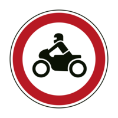
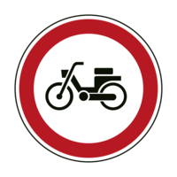
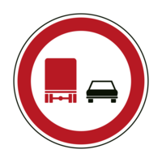
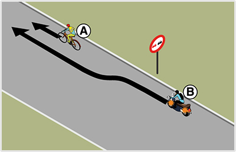
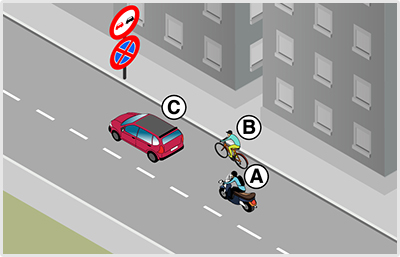
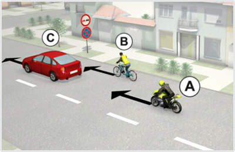
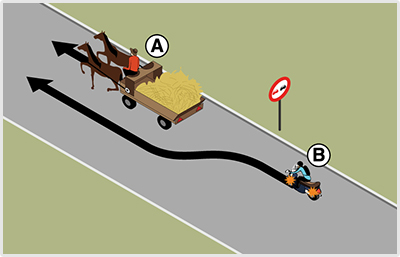

- 136. Szabad-e motorkerékpárral behajtani a jelzőtáblával jelzett területre? #703432
- Igen, de csak kétkerekű motorkerékpárral.
- Igen, de csak oldalkocsis motorkerékpárral.
- Igen, bármilyen motorkerékpárral.

- 137. Szabad-e behajtani motoros triciklivel a jelzőtáblával jelzett területre? #703433
- Nem.
- Igen.
- 138. Mi a jelzőtábla neve? #703435
- ’Motorkerékpárral behajtani tilos’
- ’Kétkerekű motorkerékpárral behajtani tilos’
- ’Segédmotoros kerékpárral behajtani tilos’

- 139. Szabad-e motorkerékpárral behajtani a jelzőtáblával jelzett területre? #703436
- Igen.
- Nem.

- 140. Mi a jelzőtábla neve? #703437
- ’Előzni tilos’
- ’Személygépkocsival előzni tilos’
- ’Gépjárművel előzni tilos’
- 141. A jelzőtábla hatálya alatt szabad-e motorkerékpárral motorkerékpárt előzni? #703438
- Igen, bármilyen motorkerékpárral kétkerekű motorkerékpárt.
- Igen, bármilyen motorkerékpárral bármilyen motorkerékpárt.
- Nem.
- 142. Gépjárművel közlekedve az alábbiak közül milyen járművet szabad megelőzni e jelzőtáblát követően? #703439
- Az állati erővel vont járművet.
- A mezőgazdasági vontatót.
- A lassú járművet.
- 143. Vonatkozik-e ez a jelzés a motorkerékpárra? #703440
- Igen.
- Nem.

- 144. Vonatkozik-e ez a jelzés a motorkerékpárra? #703441
- Nem.
- Igen.
- Csak az oldalkocsis motorkerékpárra.

- 145. Megszünteti-e ez a jelzőtábla a ’Megfordulni tilos’ jelzőtábla hatályát? #703442
- Igen.
- Nem.
- 146. Az alábbiak közül mely jelzőtáblák tilalmát szünteti meg ez a jelzőtábla? #703474
- Az ’Előzni tilos’, a ’Megfordulni tilos’ és a ’Sebességkorlátozás’ jelzőtáblákét.
- Az ’Előzni tilos’, a ’Megfordulni tilos’ és a ’Kötelező haladási irány’ jelzőtáblákét.
- Az ’Előzni tilos’, a ’Megfordulni tilos’ és a ’Kötelező legkisebb sebesség’ jelzőtáblákét.

- 147. Mit jelez ez a táblakombináció? #703475
- Azt, hogy az útra a kiegészítő táblán jelzett időszakban mindkét irányból tilos behajtani.
- Azt, hogy az útra a kiegészítő táblán jelzett időszakon kívül mindkét irányból tilos behajtani.
- Azt, hogy az útra a kiegészítő táblán jelzett időszakban ebből az irányból tilos behajtani, de parkolni szabad.
- 148. Mi a jelzőtábla neve? #703476
- ’Gépjárművel, mezőgazdasági vontatóval és lassú járművel behajtani tilos’
- ’Személygépkocsival behajtani tilos’
- ’Személygépkocsival és mopedautóval behajtani tilos’

- 149. Szabad-e segédmotoros kerékpárral behajtani a jelzőtáblával jelzett útra? #714909
- Nem.
- Igen.
- Csak akkor, ha a járművezető a jelzőtáblával jelzett területen lakik.

- 150. Szabad-e ennél a jelzésnél megállás nélkül továbbhaladni? #714910
- Nem.
- Igen, kivéve határátkelőhelyen.
- Igen, ha a vám- és pénzügyőr jelzéséből más nem következik.

- 151. Szabad-e megfordulni a jelzőtáblát követő útkereszteződésben? #714911
- Igen.
- Nem.
- 152. Megszünteti-e az ábrán látható jelzőtábla a ’Megfordulni tilos’ jelzőtábla tilalmát? #714914
- Igen.
- Nem.

- 153. Szabad-e megfordulni a jelzőtáblát követő útkereszteződésben? #714915
- Nem.
- Igen, de csak segédmotoros kerékpárral.
- Igen, egy nyomon haladó járművel.

- 154. A képen látható helyen megelőzheti-e a ’B’ jelű motorkerékpár az ’A’ jelű kerékpárost? #715026
- Igen.
- Nem, mert a jelzőtáblával jelzett előzési tilalmat be kell tartania.

- 155. A képen látható helyen az ’A’ jelű motorkerékpáros a ’B’ jelű kerékpárost szeretné megelőzni. Mikor szabályos ez? #721297
- Akkor is, ha az ’Előzni tilos’ jelzőtábla után fejezi be az előzést.
- Csak akkor, ha az ’Előzni tilos’ jelzőtábláig befejezi az előzést.
- Soha nem szabályos, mert ezen az úton a jelzőtábla előtt sem előzhet kerékpárost.
- 156. Az ’A’ jelű motorkerékpáros az előtte haladó járművek előzését már csak az ’Előzni tilos’ jelzőtábla után tudná befejezni. Válassza ki a helyes állítást! #721298
- Az ’Előzni tilos’ jelzőtábla után csak a ’B’ jelű kerékpárost szabad megelőzni.
- Az ’Előzni tilos’ jelzőtábla után csak a ’C’ jelű személygépkocsit szabad megelőzni.
- Az ’Előzni tilos’ jelzőtábla után mindkét járművet szabad megelőzni.
- 157. Ön az ’A’ jelű motorkerékpárt vezeti. Megelőzheti a képen látható helyen a ’B’ jelű kerékpárost, ha az előzést már csak az ’Előzni tilos’ jelzőtábla után tudná befejezni? #721299
- Igen.
- Nem.
- Csak akkor, ha eközben nem hajt át a menetirány szerinti bal oldalra.

- 158. A képen látható helyen az ’A’ jelű motorkerékpáros a ’B’ jelű kerékpárost szeretné megelőzni. Mikor szabályos ez? #722239
- Akkor is, ha az ’Előzni tilos’ jelzőtábla után fejezi be az előzést.
- Csak akkor, ha az ’Előzni tilos’ jelzőtábláig befejezi az előzést.
- Soha nem szabályos, mert ezen az úton a jelzőtábla előtt sem előzhet kerékpárost.
- 159. Az ’A’ jelű motorkerékpáros az előtte haladó járművek előzését már csak az ’Előzni tilos’ jelzőtábla után tudná befejezni. Válassza ki a helyes állítást! #722240
- Az ’Előzni tilos’ jelzőtábla után csak a ’B’ jelű kerékpárost szabad megelőzni.
- Az ’Előzni tilos’ jelzőtábla után csak a ’C’ jelű személygépkocsit szabad megelőzni.
- Az ’Előzni tilos’ jelzőtábla után mindkét járművet szabad megelőzni.
- 160. Ön az ’A’ jelű motorkerékpárt vezeti. Megelőzheti a képen látható helyen a ’B’ jelű kerékpárost, ha az előzést már csak az ’Előzni tilos’ jelzőtábla után tudná befejezni? #722241
- Igen.
- Nem.
- Csak akkor, ha eközben nem hajt át a menetirány szerinti bal oldalra.

- 161. Az ábrán látható helyen megelőzheti-e a ’B’ jelű motorkerékpár az ’A’ jelű, állati erővel vontatott járművet? #723715
- Igen.
- Nem, mert a jelzőtáblával jelzett előzési tilalmat be kell tartania.